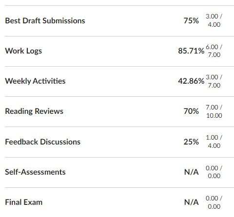

I have marked all of the Midterm Progress Reports Complete. Midterm feedback also includes a rubric that compares the amount of work you’ve done so far to the Effort Expectations for Each Grade Level. Here is a short reminder of how the course grade works in this course and how to understand the rubric.
You propose your course grade based on four measures:
As you propose your grade, you take all these measures into account, but the Effort Expectations are the starting place as you decide your base grade.
The Midterm Rubric is based on the Effort Expectations chart. Each category (e.g. Best Drafts, Logs) is listed in the left-most column. The remaining columns indicate the expectation for each grade level.
The different categories are not equivalent. For example, Reading Reviews are less significant than your Best Drafts (the most important category).
Use this documentation from Canvas for help finding the rubric on your midterm:
The percentages on your rubric come from the Grades page in Canvas. Scroll to the bottom of the page to find a table of categories and details on the work you have completed, like this example:

I marked the percentage on your rubric according to the number listed. For instance, in the image, the student has 85.71% for Work Logs; therefore, I marked the B rating for that category in the rubric. I added the ratings strictly according to the percentage cut-offs. There is no rounding or bumping up.
The rubric indicates where your effort is at midterm. As you continue working in the course, the numbers will change. You can check the Grades page at any time to see the percentages for your work and compare them to the Effort Expectations for Each Grade Level.